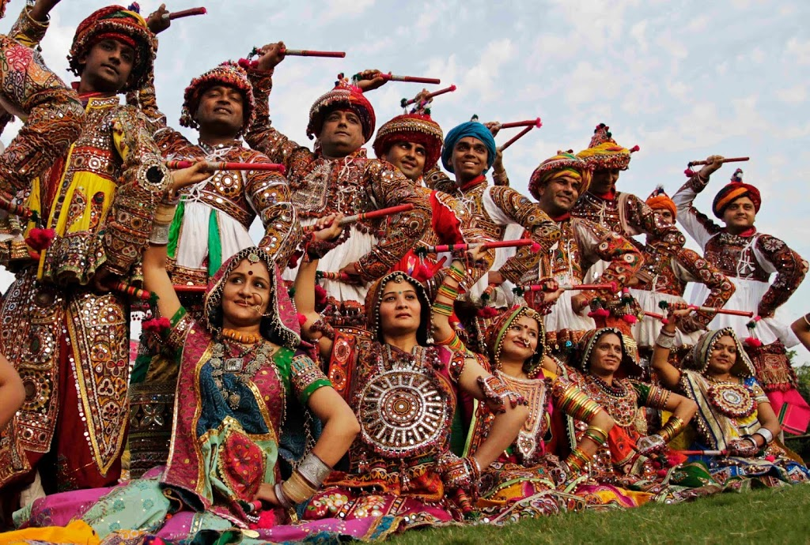
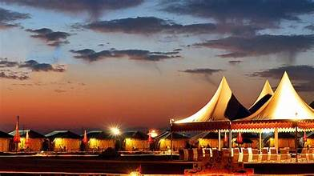

Navratri Festival
Date: 3th - 9th October
Navratri is a vibrant and colorful festival dedicated to the worship of the Hindu goddess Durga. It involves nine nights of music, dance, and rituals, with people participating in traditional dances like Garba and Dandiya.
Rann Utsav
Date: 1st November - 20th February
Rann Utsav is a cultural festival held in the white deserts of the Rann of Kutch. The festival features folk music, dance, adventure sports, and the unique experience of staying in tents on the salt flats.
Modhera Dance Festival
Date: 19th - 21st January

The Modhera Dance Festival is held at the Sun Temple in Modhera. It celebrates classical dance forms of India, featuring performances by renowned artists in a historic and majestic setting.